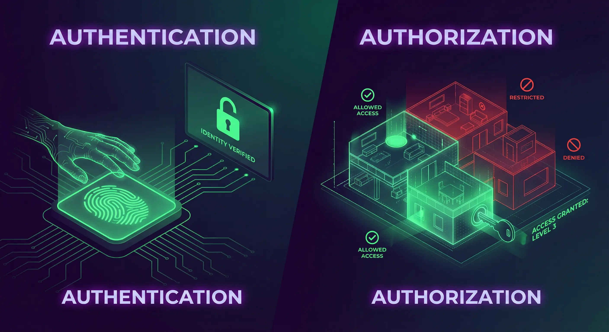

When I first started coding, "security" felt like something only big companies with dedicated teams worried about. I thought my small student projects weren't worth hacking. I was wrong. Cybersecurity isn't a feature you add at the end; it's a mindset you need from line one.
Table of Contents
- Why Cybersecurity Matters
- The CIA Triad: The Pillars of Security
- Key Security Principles
- Authentication vs. Authorization
- Common Web Vulnerabilities (OWASP)
- Practical Steps for Developers
- The Principle of Secure Defaults
- Defense in Depth
- DevSecOps: Shifting Left
- The Human Element
- Threat Modeling
- Conclusion
Why Cybersecurity Matters
Every website or application you build is a potential target. Even a simple portfolio site can be used to host malware if compromised. Understanding basic security principles helps protect both you and your users.
As a developer, writing secure code is a professional responsibility. By integrating security into your development lifecycle from the very beginning, you build more robust and trustworthy applications. It's much cheaper to fix a vulnerability during development than after a breach.
The CIA Triad: The Pillars of Security
In class, we learn the CIA Triad. It sounds academic, but it's actually a practical checklist for every feature I build. It stands for:
- Confidentiality: Ensuring that sensitive information is accessed only by an authorized person. For example, only you should be able to see your bank account balance. Encryption and access controls are key here.
- Integrity: Maintaining the consistency, accuracy, and trustworthiness of data over its entire lifecycle. Data must not be changed in transit, and steps must be taken to ensure data cannot be altered by unauthorized people (for example, in a breach).
- Availability: Ensuring that the information is available when it is needed. This means the systems, networks, and applications must be functioning correctly. Denial-of-Service (DoS) attacks specifically target this pillar.
Balancing these three elements is the core challenge. High security (Confidentiality) can sometimes make a system hard to use (reducing Availability), so finding the right mix for your specific application is crucial.
Key Security Principles
Here are some foundational principles I try to follow in every project:
- Least Privilege: Give a user or process only the bare minimum privileges necessary. If a component is compromised, this limits the damage. For example, my database user for a web app doesn't have permission to drop tables.
- Input Validation: Never trust user-provided data. I learned this the hard way when I accidentally broke my own UI with a malformed string. Always sanitize and validate all inputs to prevent attacks like SQL injection and XSS.
- Encryption: Protect data both "in transit" (as it travels over the network) and "at rest" (when it's stored in a database). Using HTTPS is standard for encrypting data in transit, while database-level encryption protects stored data.
Authentication vs. Authorization
These two terms are often confused, but keeping them distinct is vital:
- Authentication (AuthN): Verifying who a user is (e.g., logging in with a password or FaceID).
- Authorization (AuthZ): Verifying what the user is allowed to do (e.g., an admin can delete posts, but a regular user cannot).

A common vulnerability I've seen in student projects is having strong authentication but weak authorization—like allowing any logged-in user to access /admin simply by guessing the URL.
Common Web Vulnerabilities (OWASP)
The Open Web Application Security Project (OWASP) maintains a list of the top 10 most critical web application security risks. I treat this list as a checklist before deploying anything.
- Injection: This happens when untrusted data is sent to an interpreter as part of a command or query. The most famous example is SQL Injection (SQLi), where an attacker manipulates database queries to access or corrupt data.
- Broken Access Control: As mentioned above, this occurs when users can act outside of their intended permissions.
- Cross-Site Scripting (XSS): An application includes untrusted data in a new web page without proper validation. This allows attackers to execute scripts in the victim’s browser.
- Insecure Deserialization: This often leads to remote code execution. Even if it doesn't, it can be used to perform attacks, including replay attacks, injection attacks, and privilege escalation attacks.
- Cross-Site Request Forgery (CSRF): This attack tricks a logged-in user's browser into making an unwanted request to your application (e.g., changing their email or transferring funds) without their consent. To prevent this, use anti-CSRF tokens—unique, secret values that your server generates and requires for any sensitive request.
Practical Steps for Developers
Putting theory into practice is the best way to build secure applications. Here are actionable steps I take to improve the security of my projects:
1. Use HTTPS
Ensure your website uses HTTPS to encrypt all communication between the user's browser and your server. This prevents attackers from eavesdropping. Thankfully, modern hosting platforms like Netlify (which hosts this portfolio) provide free, automatically-enabled HTTPS for all sites.
2. Sanitize Inputs
Cross-Site Scripting (XSS) is nasty. It allows attackers to inject scripts into your website. By sanitizing input, you convert potentially harmful characters (like <, >) into safe HTML entities. Here’s a simple example of how you might sanitize a string in JavaScript:
function sanitizeInput(input) {
return input.replace(/[&<>""']/g, function(match) {
return {
'&': '&',
'<': '<',
'>': '>',
'"': '"',
"'": '''
}[match];
});
}
const userInput = "<p>Hello</p>";
console.log(sanitizeInput(userInput)); // <p>Hello</p>3. Keep Software Updated
We all rely on open-source libraries, but they can have vulnerabilities. Developers regularly release patches to fix them. I make it a habit to run npm audit in my Node.js projects to catch these issues early.
npm audit
npm audit fix4. Password Security Best Practices
Never store passwords in plain text. If your database is leaked, every user account is compromised. Instead, use hashing. I use libraries like bcrypt or Argon2 because they are slow by design, making brute-force attacks difficult. Don't try to invent your own encryption; rely on tested standards.
5. Secure Your APIs and Endpoints
A critical vulnerability in APIs is Broken Access Control. I've seen bugs where changing an ID in the URL (like /api/users/123 to /api/users/456) allowed access to another user's data. Always verify on the server-side that the authenticated user actually owns the resource they are requesting.
6. HTTP Security Headers
You can harden your application just by sending the right headers to the browser. It's an easy win. Some essential ones include:
- Strict-Transport-Security (HSTS): Forces the browser to only use HTTPS.
- X-Frame-Options: Prevents your site from being embedded in an iframe (stopping Clickjacking attacks).
- Content-Security-Policy (CSP): A powerful header that restricts where resources (scripts, images) can be loaded from, effectively neutralizing most XSS attacks.
The Principle of Secure Defaults
A powerful design principle is to make your systems secure by default. This means the default configuration should be the most secure option. For example, when I build user profiles, I set visibility to "private" by default. This minimizes the risk of security flaws arising from user inaction.
Defense in Depth: A Layered Approach
Don't rely on a single line of defense. "Defense in Depth" means implementing multiple layers of security. If my input validation fails, my prepared statements should catch the SQL injection. If that fails, my database user's limited privileges should stop the damage. Build a fortress, not a fence.
DevSecOps: Shifting Left
Traditionally, security was a final step before deployment. In modern workflows, we use DevSecOps, or "Shifting Left"—moving security earlier in the timeline. I try to run automated security tests in my CI/CD pipeline so I catch vulnerabilities before they ever reach production.
This ensures that security is a continuous process rather than a final hurdle.
Beyond Code: The Human Element
Often, the weakest link isn't the code—it's the people. Attackers use social engineering to trick users. While I can't control user behavior, I can design systems that minimize risk, like implementing multi-factor authentication (MFA) or adding "Are you sure?" checks for sensitive actions.
Threat Modeling
Before writing code, I try to think like an attacker. Threat Modeling involves analyzing your architecture to identify vulnerabilities. I ask myself: "Where is sensitive data stored?", "Who has access to it?", and "What happens if this component fails?". Identifying these risks early is much cheaper than fixing them after a breach.
Conclusion
Cybersecurity is a vast field, but the basics are accessible to everyone. By understanding the CIA triad, respecting the OWASP Top 10, and implementing practical defenses like HTTPS and input sanitization, you can significantly reduce the risk to your applications. Security isn't about being perfect; it's about being difficult to break.
Explore resources like OWASP’s Top 10 Security Risks or freeCodeCamp’s cybersecurity tutorials to deepen your knowledge. Check out my PassGuard project for a practical example of applying security principles!
Got questions about securing your code? Reach out via the contact form below or explore my other blog posts for additional insights!
Disclaimer: This article was written and edited by Pranav R. AI tools were used for assistance with drafting and visual assets.